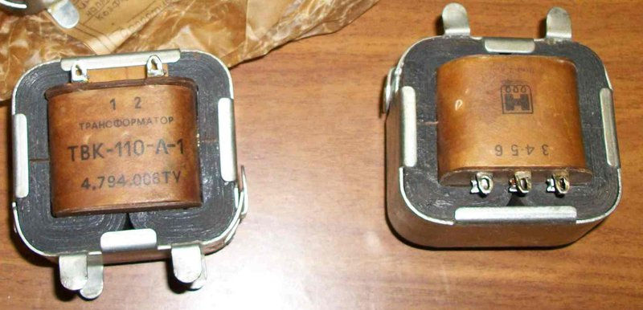
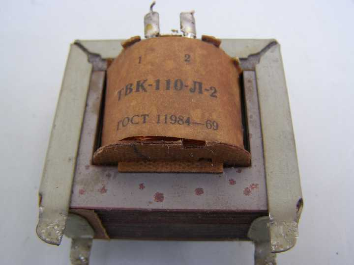
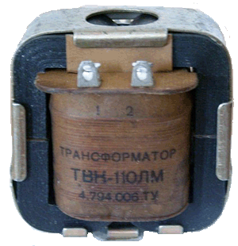

Трансформаторы ТВК-110
Трансформаторы ТВК-110Л-1, ТВК-110Л-2, ТВК-110ЛМ, применяется в выходных каскадах кадровой развертки ламповых телевизоров.
ТВК-110Л-1 применяют в ламповом выходном каскаде кадровой развертки телевизоров черно-белого изображения, имеющие кинескопы с углом отклонения луча 110° (формат изображения 3:4). В ТВК-110Л1 обмотки II и III намотаны одновременно двумя проводами (параллельно).

Рис. 1 - Внешний вид трансформатора ТВК-110Л-1

Рис. 2 - Внешний вид трансформатора ТВК-110Л-2

Рис. 3 - Внешний вид трансформатора ТВК-110ЛМ
Таблица 1
| Марка | Магнитопровод (сердечник) |
Обмотка (выводы) |
Число витков | Провод (диаметр, мм) |
Сопротивление постоянному току, Ом |
Переменное напряжение на обмотке, В |
|---|---|---|---|---|---|---|
| ТВК-110Л-1 | ШЛ20×32 | I (1-2) | 2140 | ПЭВ-1 (0,17) | 250 | 220 |
| II (3-4) | 214 | ПЭВ-1 (0,64) | 1,5 | 22 | ||
| III (5-6) | 238 | ПЭВ-1 (0,17) | 25 | 24,5 | ||
| ТВК-110Л-2 | УШ16×24 | I (1-2) | 2430 | ПЭВ-1 (0,15) | 280 | 220 |
| II (3-4) | 150 | ПЭВ-1 (0,55) | 1,05 | 13,6 | ||
| III (5-6) | 243 | ПЭВ-1 (0,15) | 32 | 22 | ||
| ТВК-110ЛМ | ШЛ16×25 | I (1-2) | 2400 | ПЭВ-1 (0,14) | 280 | 220 |
| II (3-4) | 148 | ПЭВ-1 (0,62) | 1,05 | 13,6 | ||
| III (5-6) | 240 | ПЭВ-1 (0,14) | 30 | 22 |
Источники:
mastertip.ru - Блок питания из кадрового трансформатора телевизора